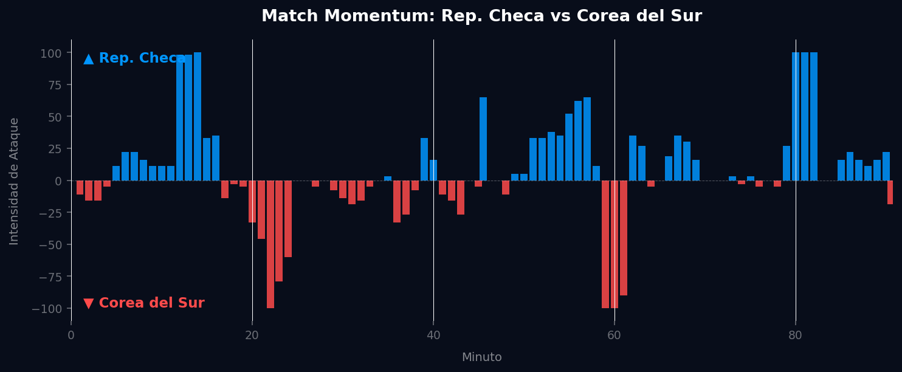
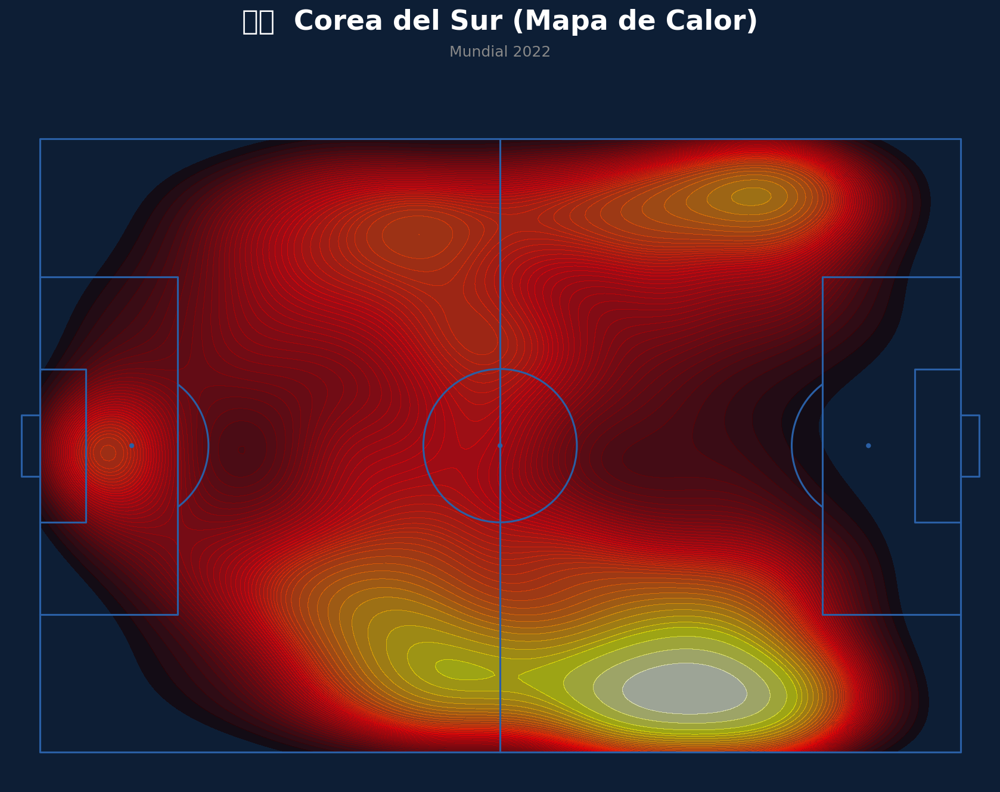
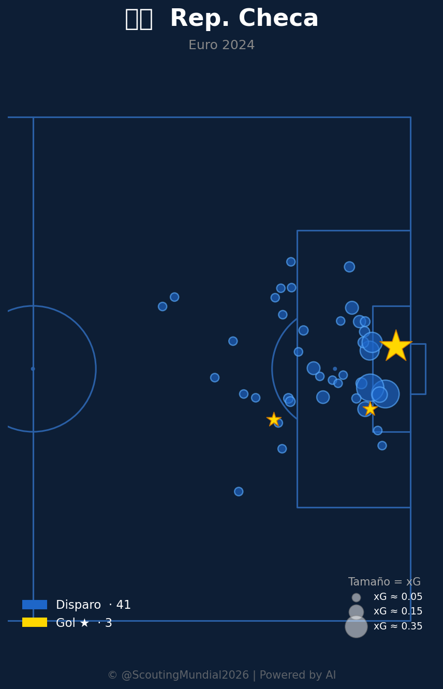

📝 Crónica y Análisis Posterior (Post-Partido)
🎯 PREDICCIÓN EXACTA
⚽ Resumen del Partido (Resultado Real: Rep. Checa 1 - 2 Corea del Sur)
Corea del Sur sumó tres puntos de oro al derrotar 2-1 a la República Checa en su debut mundialista. El conjunto asiático supo imponer su velocidad y dinámica en las transiciones ofensivas frente al imponente pero pesado bloque físico europeo. A través de desbordes veloces por las bandas y una gran capacidad de asociación en velocidad liderada por Son Heung-min, la escuadra surcoreana logró golpear en momentos clave para establecer su ventaja. República Checa descontó en la segunda parte mediante el juego aéreo, aprovechando su altura para recortar la diferencia en un tiro de esquina. Sin embargo, el bloque defensivo surcoreano resistió con solvencia el asedio checo en los minutos finales para sellar el triunfo.
🔮 Impacto en el Grupo A y Proyecciones para la Ronda 2
- Ajuste del Algoritmo: Corea del Sur empata en puntos con México en la cima del grupo, aunque con menor diferencia de goles. Las métricas de progresión rápida de los asiáticos se consolidan en el simulador, mientras que la zaga checa muestra problemas para contener la velocidad en transiciones.
- Proyección de la Segunda Ronda de Grupos:
- México vs Corea del Sur: Las necesidades surcoreanas obligarán a adelantar líneas, lo que podría favorecer las transiciones rápidas mexicanas.
- Rep. Checa vs Sudáfrica: El conjunto checo parte con un 48% de probabilidad de victoria para sellar su pase a octavos frente a una Sudáfrica que necesita arriesgar tras su derrota en el debut.
📈 Análisis del Match Momentum
El gráfico de Match Momentum muestra cómo el control del juego fluctuó, con Rep. Checa dominando el 46.8% del partido gracias a un bloque ofensivo muy agresivo, cuyo pico máximo de 100.00 ocurrió al minuto 14'. Por su parte, Corea del Sur replegó filas intentando contragolpear, logrando su mayor intensidad (100.00) en el minuto 22'. La constancia en la presión de la selección local en las inmediaciones del área rival fue determinante para explicar el triunfo de Corea del Sur por 1-2 como visitante.
Gráfico: Match Momentum (Intensidad de Ataque)

🇨🇿 República Checa: Análisis Táctico
Ventajas
- Peligro masivo por el carril derecho: Como se aprecia en su mapa de peligro esperado, su mayor índice de Amenaza Esperada (xT), alcanzando valores superiores a 0.6, se genera en la esquina profunda derecha. Esto se complementa a la perfección con su mapa de asistencia y tiros, que muestra una enorme cantidad de pases clave nacidos desde esa misma banda.
- Circuito claro con Coufal: En la red de pases, se nota que el lateral derecho (Coufal) es el principal motor de progresión, asociándose constantemente en largo hacia Chytil.
- Presión y recuperación extendida: Su mapa defensivo denota un bloque muy trabajador, capaz de morder y generar presiones tanto en campo propio como en las bandas del territorio rival.
Desventajas
- Centralización excesiva y embotellamiento: Su red de pases muestra a jugadores como Souček, Barra, Kuchta, Schick y Provod sumamente juntos en el carril central. Esto puede facilitar que un rival ordenado les cierre los caminos por dentro.
- Efectividad justa: Registran 41 disparos y solo 3 goles, lo que indica que generan mucho volumen pero les cuesta ser letales.
🇰🇷 Corea del Sur: Análisis Táctico
Ventajas
- Mayor contundencia: De acuerdo con el mapa de tiros, los surcoreanos muestran una puntería superior, logrando marcar 5 goles con 43 disparos, concentrando gran parte de sus tiros letales en el corazón del área grande.
- Profundidad exterior simétrica: Su mapa de calor refleja que pisan con muchísima fuerza los dos extremos del último tercio, especialmente el sector derecho en ataque, abriendo de gran forma el campo.
- Amenaza diferencial en ataque: Vemos que su peligro acumulado (xT) supera el 0.7 en el vértice derecho del área penal, superando la escala de peligro general de la República Checa.
Desventajas
- Salida muy baja y dividida: En su red de pases, el peso de la salida recae casi en su totalidad en una línea de defensores (los "Kim") y el mediocentro Jung. Si se les presiona esa base, la conexión con Son o Cho queda muy aislada.
📊 Pizarras y Gráficos Tácticos
Mapa de Calor (Rep. Checa)

Mapa de Calor (Corea del Sur)

Mapa de Tiros (Rep. Checa)

 Corea del Sur
Corea del Sur